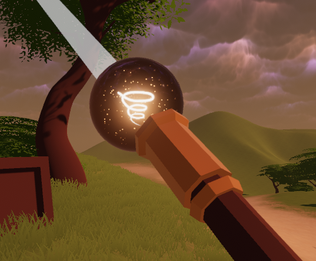

Intro
Spell-Waves is an interactive VR game that anyone can play regardless of age.
You have a spell book with available spells. The purpose is to use these spells to move around or attack enemies.
By moving a wand with various gestures, different types of spells can be summoned and cast.
Goal
The goal of the project is to create a fully functioning game that is both fun and can be completed.
We believe that the topic of being able to cast magic like in the movie "Harry Potter" leaves a lot of room for
technical programming that can be re-used in other potential future game-related projects. Topics such as particle animations,
advnanced kinematic movement and collision detection are very general and large areas of research that has many uses. By
doing this project we hope to get a better insight of what makes a game good or bad.
Report
In this project we have implemented both advanced graphics and advanced interaction. Generally speaking, many different
techniques have been added via Unity in order to make this a fully functioning games. So, the bigger pictures include many
different topics. More specifically however, our project can be divided into the two areas:
♠ Detecting gesture in 3D from user arm movement.
♠ Special effects in forms of particle animations.
Some other important features in the game includes visual aspects for the environment, guiding users with handy info (like a tutorial system), moving objects and spells in the world in an interactive manner.
We decided to implement our of gesture-detection system from scratch. This provides us with more freedom to be precise with what
we can or want to achieve with the project. It becomes easier to create fully-customized spells, and it allows us to avoid copy-right issues
that would come with using an existing free API.
In order to make the game appealing it is crucial to have good special affects. By having cool graphics and particle animations, spells can be created
in a creative manner. We have by using particle effects created spells like fire ball, tornado, black-holes and more.
Work
MARCUS ANDERSSON
and8@kth.se
VFX
Particle animations
Website

Tomas Andersson
tomas3@kth.se
Enemy AI
Spellbook interaction
3D models
VFX
Challanges
It was difficult to get the code to recognize gestures in a user-friendly way. Humans tend to make too large or small shapes, too many, or too sloppily.
The code should be able to detect and classify imperfect spell-gestures, and this was not a trivial task.
Obstacles
Since we created a VR game it got more cumbersome to code it than a normal game. If you want to test doing gestures it
is highly preferrable to test the real controllers. The controllers are locked in the VIC studio and it can be annoying
to travel to KTH only to test a feature. Another obstacle was that we used GIT in conjunction with Unity. This created
some strange merge-errors.
Related
The visuals for this game was inspired by the popular game called Zelda. In the newer versions of Zelda the world is
fantasy looking, altough also somewhat cartoonish. This gives the impression that the game is not violent, even if you
kill monsters. The magic aspect was inspired by popular media and movies such as "Harry Potter".
Lessons learned

We learned that it becomes easier if everyone just works on their on branch in GIT. We all marge our stuff once they
work as we think they should. Another possible strategy when working on the same branch is to quickly push changes and
always pull before one start to work on something. Merge-conflicts are always annoying and gets worse the longer one wait.
The user feedback was useful, we realized that the game needs to have some sort of tutorial system. It was hard
for testers to know what they were supposed to do. For instance, no one had any idea about what gestures to try out.